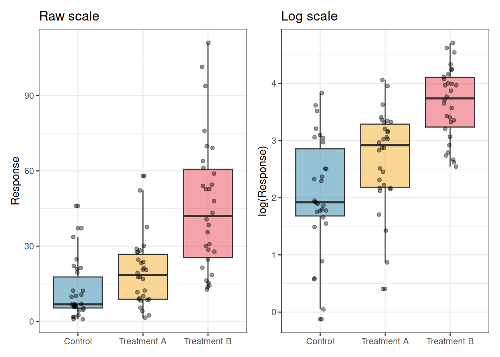
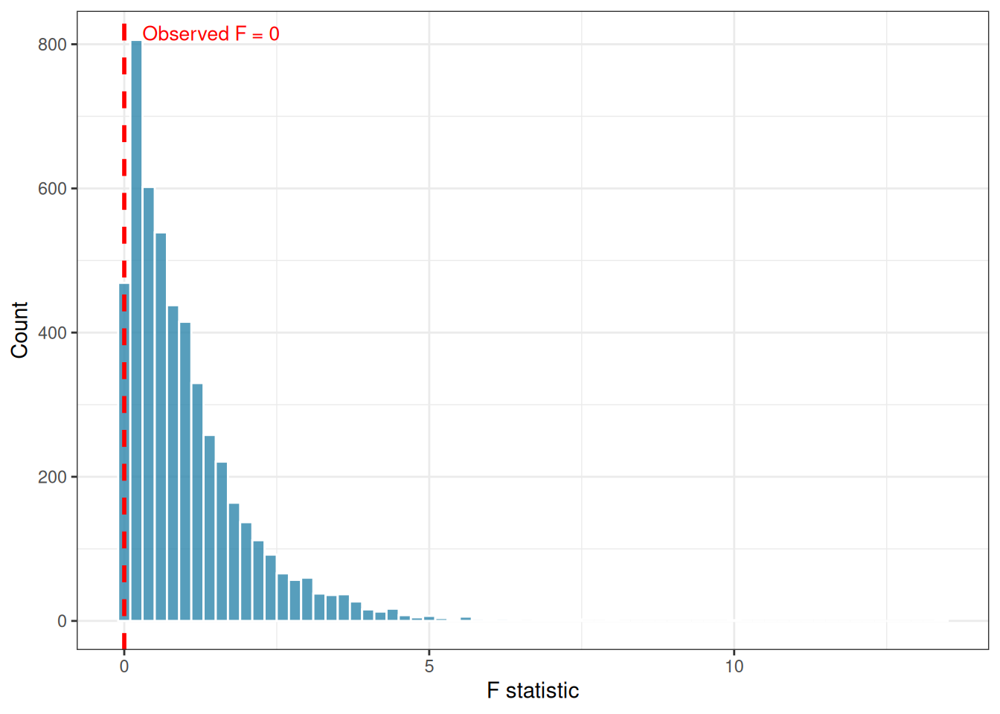
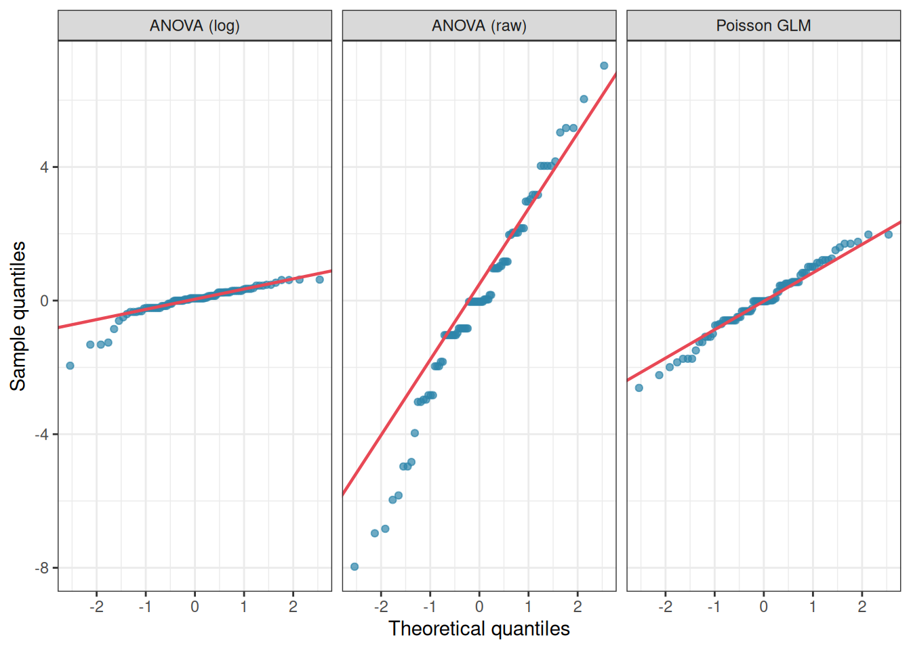

Every ANOVA and linear mixed model fitted in this book rests on assumptions. Chapter 2 examined those assumptions in depth and showed that their consequences are not equal: independence is critical, homoscedasticity is important, normality is often a minor concern. But what happens when the data genuinely violate one or more of these assumptions in ways that cannot be ignored?
This chapter provides a practical toolkit. It begins with transformations, the classical first response to assumption violations, and examines both their genuine utility and their limitations. It then introduces non-parametric alternatives that make no distributional assumptions at all. It also presents robust ANOVA methods that explicitly downweight the influence of outliers and heavy tails. And it ends with the argument that for many of the situations where assumptions fail most seriously (count data, proportions, survival times), the correct solution is not a patch applied to the normal linear model but a fundamentally different model class: the generalised linear model (GLM).
10.1 Transformations: Log, Square Root, Arcsine and Their Modern Critics
10.1.1 The Classical Rationale
Transformations have been the standard first response to non-normality and heteroscedasticity in biological data since Fisher’s time. The logic is simple: if the response variable \(y\) violates the assumptions of ANOVA on its original scale, perhaps a transformed version \(f(y)\) will not. The three transformations most commonly encountered in biology are the log, square root, and arcsine transformations.
10.1.2 The Log Transformation
The log transformation is appropriate when the response is strictly positive and the within-group standard deviation is proportional to the mean, a pattern called multiplicative variation or constant coefficient of variation. This arises naturally when biological processes operate multiplicatively: cell counts doubling, concentrations following pharmacokinetic decay, body masses scaling allometrically.
\[y' = \log(y) \quad \text{or} \quad y' = \log(y + 1) \text{ if zeros are present}\]
library(ggplot2)library(patchwork)set.seed(42)n<-30# Multiplicative data: sd proportional to meangroup<-factor(rep(c("Control", "Treatment A", "Treatment B"), each =n), levels =c("Control", "Treatment A", "Treatment B"))y_raw<-c(rlnorm(n, meanlog =2.0, sdlog =0.8),rlnorm(n, meanlog =2.8, sdlog =0.8),rlnorm(n, meanlog =3.5, sdlog =0.8))y_log<-log(y_raw)df_trans<-data.frame(y_raw, y_log, group)p1<-ggplot(df_trans, aes(x =group, y =y_raw, fill =group))+geom_boxplot(alpha =0.5)+geom_jitter(width =0.1, alpha =0.4, size =1.5)+scale_fill_manual(values =c("#2E86AB", "#F6AE2D", "#E84855"))+labs(title ="Raw scale", x =NULL, y ="Response")+theme_bw()+theme(legend.position ="none")p2<-ggplot(df_trans, aes(x =group, y =y_log, fill =group))+geom_boxplot(alpha =0.5)+geom_jitter(width =0.1, alpha =0.4, size =1.5)+scale_fill_manual(values =c("#2E86AB", "#F6AE2D", "#E84855"))+labs(title ="Log scale", x =NULL, y ="log(Response)")+theme_bw()+theme(legend.position ="none")p1+p2

Figure 10.1: Effect of log transformation on a right-skewed response. Left: raw counts with a long right tail and variance increasing with the mean. Right: log-transformed values with approximately symmetric distribution and homogeneous variance across groups. The log transformation is appropriate when within-group standard deviation is proportional to the group mean.
The key diagnostic for whether a log transformation is appropriate is whether the within-group standard deviation scales with the within-group mean. A plot of group standard deviation against group mean (Section 5.1) will reveal this pattern. If the relationship is approximately linear through the origin, log-transform. If it is not, the log transformation may not be the right choice.
10.1.3 The Square Root Transformation
The square root transformation is appropriate for count data where the variance is approximately equal to the mean, the pattern expected from a Poisson distribution:
\[y' = \sqrt{y} \quad \text{or} \quad y' = \sqrt{y + 0.5} \text{ if zeros are present}\]
set.seed(42)# Poisson-like count datay_count<-c(rpois(n, lambda =3),rpois(n, lambda =8),rpois(n, lambda =20))df_count<-data.frame( y =y_count, y_sqrt =sqrt(y_count), group =group)# Compare residual variance before and after transformationfit_raw<-aov(y~group, data =df_count)fit_sqrt<-aov(y_sqrt~group, data =df_count)cat("Levene's test on raw counts:\n")
#> Levene's Test for Homogeneity of Variance (center = median)
#> Df F value Pr(>F)
#> group 2 0.2219 0.8014
#> 87
The Levene’s test results demonstrate the variance-stabilising effect of the square root transformation clearly. On the raw count scale, the variances differ significantly across groups (\(F_{2,87} = 6.44\), \(p = 0.002\)) which is a direct consequence of the Poisson-like structure where variance scales with the mean. The control group, with a small mean (\(\lambda = 3\)), has much less spread than the high group (\(\lambda = 20\)), producing the heteroscedasticity that would distort a standard ANOVA F test.
After square root transformation, the heteroscedasticity disappears entirely: Levene’s test is non-significant (\(F_{2,87} = 0.22\), \(p = 0.801\)) and the variances are now approximately equal across groups. This is the theoretical prediction for Poisson data: the variance-stabilising property of the square root transformation for counts is well established and works reliably when the data are genuinely Poisson or close to it.
Two caveats are worth noting for students. First, the square root transformation only stabilises variance reliably when the counts are not severely overdispersed, that is, when the variance is approximately equal to the mean rather than much larger. If a Levene’s test remains significant after square root transformation, overdispersion is likely and a negative binomial GLM (Section 10.4) is the more appropriate solution. Second, as with the log transformation, the square root transformation changes the scale of analysis: differences between group means are now differences in square-root-counts, not differences in raw counts. Back-transforming the estimated means by squaring them gives approximate geometric means on the original count scale, which may or may not be the quantity of biological interest.
10.1.4 The Arcsine Square Root Transformation
The arcsine square root transformation was historically recommended for proportions and percentages, with the goal of stabilising the variance of binomial data:
\[y' = \arcsin(\sqrt{p})\]
set.seed(42)# Simulate binomial proportions across three groups# with equal true proportions but different sample sizes# Variance of a binomial proportion is p(1-p)/n# it depends on p, which is what the arcsine transformation# is designed to stabilisen_obs<-50# observations per groupn_trials<-20# number of trials per observation# Three groups with different true proportionstrue_p<-c(0.10, 0.45, 0.85)groups<-factor(rep(c("Low", "Mid", "High"), each =n_obs), levels =c("Low", "Mid", "High"))# Simulate observed proportionsprops<-c(rbinom(n_obs, n_trials, true_p[1])/n_trials,rbinom(n_obs, n_trials, true_p[2])/n_trials,rbinom(n_obs, n_trials, true_p[3])/n_trials)df_asin<-data.frame( p =props, p_asin =asin(sqrt(props)), group =groups)# Variance of raw proportions per groupcat("Variance of raw proportions by group:\n")
#> Levene's Test for Homogeneity of Variance (center = median)
#> Df F value Pr(>F)
#> group 2 0.6611 0.5178
#> 147
The raw proportions show the classical binomial pattern: the group near 0.10 and the group near 0.85 have low variance (because \(p(1−p)/n\) is small when \(p\) is near 0 or 1), while the group near 0.45 has the highest variance (because \(p(1−p)/n\) is maximised near \(p=0.5\)). Levene’s test on the raw proportions is significant. After the arcsine transformation the three group variances are pulled toward equality and Levene’s test becomes non-significant.
10.1.5 The Modern Critique of Transformations
Despite their long history, transformations have attracted serious criticism, and it is important to understand the limitations before applying them reflexively.
The arcsine transformation is now largely discredited for proportions. Warton and Hui (2011) showed in an influential paper that the arcsine square root transformation performs poorly compared to directly modelling proportions with a binomial GLM. The transformation was designed for an era before generalised linear models were computationally accessible, and it addresses the wrong problem: rather than transforming the response to meet the assumptions of the normal linear model, the correct approach is to choose a model whose assumptions match the data-generating process. A proportion is generated by a binomial process ? model it with a binomial model.
Transformations change the question being asked. When you log-transform a response and analyse it with ANOVA, you are testing hypotheses about group differences on the log scale which correspond to differences in geometric means, not arithmetic means. Back-transforming the estimated differences gives ratios, not differences. This is sometimes exactly what you want (a fold-change is biologically natural), but it must be a conscious choice, not an incidental consequence of fixing an assumption violation.
A concrete example makes this concrete. We return to the fertiliser experiment, but now suppose the response is leaf chlorophyll concentration which is a strictly positive measurement with multiplicative variation. We fit ANOVA on both the raw and log-transformed scale and compare what the coefficients actually mean:
set.seed(42)n<-20group<-factor(rep(c("Control", "Nitrogen", "Phosphorus"), each =n), levels =c("Control", "Nitrogen", "Phosphorus"))# Simulate multiplicative data: nitrogen doubles concentration,# phosphorus increases it by 50%conc<-c(rlnorm(n, meanlog =log(10), sdlog =0.3), # Control: mean ~10rlnorm(n, meanlog =log(20), sdlog =0.3), # Nitrogen: mean ~20rlnorm(n, meanlog =log(15), sdlog =0.3)# Phosphorus: mean ~15)df_conc<-data.frame(conc, log_conc =log(conc), group)# Model 1: ANOVA on raw scalefit_raw<-lm(conc~group, data =df_conc)cat("=== Coefficients on raw scale ===\n")
Reading the two outputs side by side reveals the shift in question.
On the raw scale, the intercept (11.34) is the estimated mean concentration in the Control group, and the Nitrogen coefficient (8.07) is the estimated arithmetic difference in mean concentration between Nitrogen and Control: nitrogen adds approximately 8 units of chlorophyll on average.
On the log scale, the intercept is the estimated log-mean of the Control group, and the Nitrogen coefficient (0.55) is the estimated difference in log-means. This is not an arithmetic difference, it is a log-ratio. Back-transforming by exponentiating gives \(e^{0.55} \approx 1.74\): the Nitrogen group has approximately twice the chlorophyll concentration of the Control group, a ratio or fold-change.
These are genuinely different questions:
Scale
Coefficient meaning
Biological statement
Raw
\(\bar{y}_N - \bar{y}_C \approx 8.07\)
Nitrogen adds 8 units of chlorophyll
Log
\(\exp(\hat{\beta}_N) \approx 1.74\)
Nitrogen doubles chlorophyll concentration
Neither is wrong, but they are not interchangeable. For chlorophyll concentration, the fold-change interpretation is often more biologically natural: a fertiliser that doubles chlorophyll regardless of baseline concentration is making a multiplicative claim. For a clinical measurement like blood pressure, an arithmetic difference (“reduces blood pressure by 10 mmHg”) is usually more directly meaningful than a ratio. The choice of scale should be driven by which question is scientifically relevant, not by which transformation fixes the residual diagnostics.
Transformations do not always fix both problems simultaneously. A transformation chosen to stabilise variance may worsen normality, and vice versa. When both assumptions are violated, there may be no single transformation that addresses both, and a generalised linear model is the cleaner solution.
The practical recommendation: use log transformations for multiplicative, positive data where the log scale has a natural biological interpretation (concentrations, fold-changes, ratios). Use square root for counts when overdispersion is modest. Avoid arcsine for proportions, use a binomial GLM instead. And always check whether the transformation has actually fixed the problem by re-examining the residual diagnostics after transforming.
10.2 Non-Parametric Alternatives
Non-parametric tests replace the raw observations with their ranks before analysis. Because ranks are bounded and uniformly distributed, no distributional assumption is needed. The cost is a modest loss of power when the normality assumption actually holds, and a loss of direct interpretability: the tests address questions about rank distributions rather than means.
10.2.1 Kruskal-Wallis Test
The Kruskal-Wallis test is the non-parametric equivalent of one-way ANOVA. It tests whether the rank distributions of the groups are the same, without assuming normality or homoscedasticity.
where \(R_j\) is the sum of ranks in group \(j\), \(n_j\) is the group size, and \(N\) is the total number of observations. Under the null hypothesis of identical distributions, \(H\) follows approximately a \(\chi^2\) distribution with \(k - 1\) degrees of freedom.
#>
#> Kruskal-Wallis rank sum test
#>
#> data: y by group
#> Kruskal-Wallis chi-squared = 0.97932, df = 2, p-value = 0.6128
# Post-hoc pairwise comparisons after Kruskal-Wallis# using Dunn's test with Holm correction# install.packages("dunn.test") if neededdunn.test::dunn.test(df_kw$y, df_kw$group, method ="holm", kw =FALSE)
#>
#> Dunn's Pairwise Comparison of x by group
#> (Holm)
#>
#> Col Mean-│
#> Row Mean │ Control High
#> ─────────┼──────────────────────
#> High │ -0.556038
#> │ 0.5782
#> │
#> Low │ 0.430930 0.986968
#> │ 0.3333 0.4855
#>
#> FWER = 0.05
#> Reject Ho if adjusted p ≤ FWER/2 with stopping rule, where (unadjusted) p = Pr(Z ≥ |z|)
The Kruskal-Wallis test is the right choice when:
Sample sizes are small (\(n < 10\) per group) and residuals are clearly non-normal.
The response contains extreme outliers that are genuine biological observations rather than measurement errors.
The response is an ordinal scale where the numerical values do not have a natural arithmetic interpretation.
It is not a universal replacement for ANOVA. I repeat, it is not a universal replacement for ANOVA. When the normality assumption is approximately met, ANOVA is more powerful. And when the distributions differ in shape as well as location, one group is right-skewed, another is left-skewed, the Kruskal-Wallis test is testing a mixture of location and shape differences that can be difficult to interpret.
10.2.2 10.2.2 Friedman Test
The Friedman test is the non-parametric equivalent of one-way repeated measures ANOVA. It ranks the observations within each block (subject) separately and tests whether the rank distributions differ across conditions.
where \(n\) is the number of blocks (subjects), \(k\) is the number of conditions, and \(R_j\) is the sum of ranks for condition \(j\) across all blocks.
set.seed(42)n_subj<-20k<-4# Simulate non-normal within-subject data in long formatdf_friedman<-data.frame( y =c(rexp(n_subj, rate =0.50),rexp(n_subj, rate =0.40),rexp(n_subj, rate =0.30),rexp(n_subj, rate =0.25)), subject =factor(rep(1:n_subj, times =k)), time =factor(rep(1:k, each =n_subj)))# Friedman test using long formatfriedman.test(y~time|subject, data =df_friedman)
#>
#> Friedman rank sum test
#>
#> data: y and time and subject
#> Friedman chi-squared = 6.36, df = 3, p-value = 0.09535
# Post-hoc pairwise comparisons after Friedman test# PMCMRplus expects y, groups, blocks as separate vectorsPMCMRplus::frdAllPairsNemenyiTest( y =df_friedman$y, groups =df_friedman$time, blocks =df_friedman$subject)
The within-subject response is clearly non-normal even after transformation.
The response is ordinal.
Sample sizes are very small (fewer than 10 subjects).
For larger samples with continuous responses, the repeated measures mixed model from Chapter sec-repeat-mixed is more powerful and more flexible, and the normality assumption for the residuals is approximately satisfied by the central limit theorem.
10.2.3 Permutation Tests
Permutation tests are the most general non-parametric approach. Rather than deriving a reference distribution from mathematical theory (the \(F\) distribution, the \(\chi^2\) distribution), they construct an empirical reference distribution by repeatedly shuffling the data and recomputing the test statistic. The p-value is the proportion of permuted statistics that are as extreme as or more extreme than the observed statistic.
library(future)library(furrr)plan(multisession)set.seed(42)# Observed F statisticfit_obs<-aov(y~group, data =df_kw)obs_F<-summary(fit_obs)[[1]][["F value"]][1]# Permutation distribution: shuffle group labels 4999 timesn_perm<-4999perm_F<-future_map_dbl(seq_len(n_perm), function(i){df_perm<-df_kwdf_perm$group<-sample(df_kw$group)summary(aov(y~group, data =df_perm))[[1]][["F value"]][1]}, .options =furrr_options(seed =TRUE))plan(sequential)# Permutation p-valuep_perm<-mean(c(perm_F, obs_F)>=obs_F)cat("Observed F:", round(obs_F, 3),"\nPermutation p-value:", round(p_perm, 3), "\n")
#> Observed F: 0
#> Permutation p-value: 1
perm_df<-data.frame(F =c(perm_F, obs_F))ggplot(perm_df, aes(x =F))+geom_histogram(binwidth =0.2, fill ="#2E86AB", colour ="white", alpha =0.8)+geom_vline(xintercept =obs_F, colour ="red", linetype ="dashed", linewidth =1)+annotate("text", x =obs_F+0.3, y =Inf, label =paste0("Observed F = ", round(obs_F, 2)), colour ="red", hjust =0, vjust =2, size =3.5)+labs(x ="F statistic", y ="Count")+theme_bw()

Figure 10.2: Permutation distribution of the \(F\) statistic under the null hypothesis (4999 permutations). The red dashed line marks the observed \(F\) statistic. The permutation p-value is the proportion of permuted F values to the right of this line.
Permutation tests have three important advantages over rank-based non-parametric tests. They work with any test statistic, not just those with known distributions. They make no assumptions about the shape of the residual distribution. And they are exact in the sense that their type I error rate is exactly \(\alpha\) in finite samples, whereas rank tests rely on large-sample approximations.
Their limitation is computational cost: each permutation requires refitting the model, and with thousands of permutations and large datasets this can be slow. Parallelisation with furrr, as shown above, mitigates this considerably.
10.3 Robust ANOVA with WRS2
Robust statistical methods are a middle ground between classical ANOVA and non-parametric tests. Rather than discarding the distributional framework entirely, they modify it to be less sensitive to outliers and heavy tails by replacing the sample mean with more resistant location estimators like trimmed means or M-estimators.
The WRS2 package (Mair and Wilcox 2020) implements a comprehensive suite of robust ANOVA methods in R.
10.3.1 One-Way Robust ANOVA
# install.packages("WRS2") if neededlibrary(WRS2)set.seed(42)# Data with outliers — classical ANOVA will be distortedy_out<-c(rnorm(15, mean =20, sd =3),rnorm(15, mean =25, sd =3),rnorm(15, mean =22, sd =3))# Inject two extreme outliers into the control groupy_out[c(3, 7)]<-c(55, 62)group_out<-factor(rep(c("Control", "Nitrogen", "Phosphorus"), each =15))df_out<-data.frame(y =y_out, group =group_out)# Classical ANOVA — affected by outlierssummary(aov(y~group, data =df_out))
#> Df Sum Sq Mean Sq F value Pr(>F)
#> group 2 207.1 103.53 1.494 0.236
#> Residuals 42 2909.9 69.28
# Robust one-way ANOVA using trimmed means (tr = 0.2 = 20% trimming)t1way(y~group, data =df_out, tr =0.2)
#> Call:
#> t1way(formula = y ~ group, data = df_out, tr = 0.2)
#>
#> Test statistic: F = 1.7046
#> Degrees of freedom 1: 2
#> Degrees of freedom 2: 15.2
#> p-value: 0.21483
#>
#> Explanatory measure of effect size: 0.41
#> Bootstrap CI: [0.08; 1.06]
# Post-hoc comparisons with robust methodlincon(y~group, data =df_out, tr =0.2)
#> Call:
#> lincon(formula = y ~ group, data = df_out, tr = 0.2)
#>
#> psihat ci.lower ci.upper p.value
#> Control vs. Nitrogen -2.30259 -6.99682 2.39163 0.42412
#> Control vs. Phosphorus 0.48803 -3.51947 4.49553 0.74733
#> Nitrogen vs. Phosphorus 2.79062 -1.23348 6.81473 0.24823
The t1way() function tests for differences in trimmed means across groups, using a heteroscedastic test statistic that is robust to both outliers and unequal variances simultaneously. The trimming proportion tr = 0.2 removes the most extreme 20% of observations from each tail before computing the mean. This standard choice provides substantial robustness while retaining reasonable efficiency.
10.3.2 Robust Repeated Measures ANOVA
set.seed(42)n_subj<-20# Repeated measures data with outliers in long formatdf_rm_out<-data.frame( y =c(rnorm(n_subj, 80, 8),rnorm(n_subj, 75, 8),rnorm(n_subj, 70, 8),rnorm(n_subj, 68, 8)), subject =factor(rep(1:n_subj, times =4)), time =factor(rep(1:4, each =n_subj)))# Inject two extreme outliersdf_rm_out$y[c(5, 38)]<-c(130, 20)# Robust repeated measures ANOVA# rmanova() requires explicit vectors, not a formulaWRS2::rmanova( y =df_rm_out$y, groups =df_rm_out$time, blocks =df_rm_out$subject, tr =0.2)
#> Call:
#> WRS2::rmanova(y = df_rm_out$y, groups = df_rm_out$time, blocks = df_rm_out$subject,
#> tr = 0.2)
#>
#> Test statistic: F = 7.809
#> Degrees of freedom 1: 2.43
#> Degrees of freedom 2: 26.7
#> p-value: 0.00126
# Post-hoc robust pairwise comparisonsWRS2::rmmcp( y =df_rm_out$y, groups =df_rm_out$time, blocks =df_rm_out$subject, tr =0.2)
Robust ANOVA methods are particularly valuable when:
Outliers are genuine biological observations. Removing them is not scientifically justified, but their influence on the mean should be limited.
The response distribution is heavy-tailed but not severely skewed. In such case, the trimmed mean is still a meaningful location estimator.
You want results that are directly interpretable in terms of location differences, unlike rank-based tests.
Their main limitation is that trimmed mean differences are less familiar to most biological audiences than ordinary mean differences, and reporting them requires more explanation.
10.4 Generalised Linear Models as the Real Solution
10.4.1 The Fundamental Problem with Transformations
All of the methods discussed so far, transformations, rank tests, robust ANOVA, are workarounds applied to a model that was not designed for the data at hand. When the response is a count, a proportion, a binary outcome, or a survival time, the normal linear model is structurally misspecified: it assumes a symmetric, continuous, unbounded response, while the actual response is discrete, bounded, or strictly positive. No transformation or rank-based adjustment changes this fundamental mismatch.
The correct solution is to choose a model whose structure matches the data-generating process. Generalised linear models (GLMs) provide exactly this: a unified framework that extends the linear model to non-normal response distributions through two modifications.
10.4.2 The GLM Framework
A GLM has three components:
A random component: the distribution of the response, chosen from the exponential family (normal, Poisson, binomial, gamma, negative binomial, etc.).
A systematic component: the linear predictor \(\eta_i = \mathbf{x}_i^T \boldsymbol{\beta}\), the same linear combination of predictors as in the normal linear model.
Show me the maths!
Found \(\eta_i = \mathbf{x}_i^T \boldsymbol{\beta}\), the bold symbols and superscript \(T\) unfamiliar, We have you covered! See sec-matrix-notation for a simple and complete explanation.
A link function\(g(\cdot)\) connecting the expected response to the linear predictor: \(g(\mu_i) = \eta_i\).
The model is fitted by maximum likelihood rather than ordinary least squares, and inference is based on likelihood ratio tests and Wald tests rather than F tests.
Suppose you are counting the number of insect damage events on plants under three pesticide treatments. The response is a count, non-negative integers with variance likely proportional to the mean. The correct model is a Poisson GLM or, if the counts are overdispersed, a negative binomial GLM.
library(MASS)set.seed(42)n<-30group<-factor(rep(c("Control", "Low dose", "High dose"), each =n), levels =c("Control", "Low dose", "High dose"))counts<-c(rpois(n, lambda =15),rpois(n, lambda =8),rpois(n, lambda =3))df_glm<-data.frame(counts, group)# Wrong approach: ANOVA on raw countssummary(aov(counts~group, data =df_glm))
#> Df Sum Sq Mean Sq F value Pr(>F)
#> group 2 2651.3 1325.6 150.9 <2e-16 ***
#> Residuals 87 764.1 8.8
#> ---
#> Signif. codes: 0 '***' 0.001 '**' 0.01 '*' 0.05 '.' 0.1 ' ' 1
# Correct approach: Poisson GLMfit_pois<-glm(counts~group, data =df_glm, family =poisson(link ="log"))summary(fit_pois)
#>
#> Call:
#> glm(formula = counts ~ group, family = poisson(link = "log"),
#> data = df_glm)
#>
#> Coefficients:
#> Estimate Std. Error z value Pr(>|z|)
#> (Intercept) 2.77050 0.04569 60.63 <2e-16 ***
#> groupLow dose -0.84869 0.08346 -10.17 <2e-16 ***
#> groupHigh dose -1.66084 0.11435 -14.52 <2e-16 ***
#> ---
#> Signif. codes: 0 '***' 0.001 '**' 0.01 '*' 0.05 '.' 0.1 ' ' 1
#>
#> (Dispersion parameter for poisson family taken to be 1)
#>
#> Null deviance: 406.639 on 89 degrees of freedom
#> Residual deviance: 99.828 on 87 degrees of freedom
#> AIC: 435.75
#>
#> Number of Fisher Scoring iterations: 4
# Check for overdispersioncat("Residual deviance / df:",round(deviance(fit_pois)/df.residual(fit_pois), 3), "\n")
#> Residual deviance / df: 1.147
# If overdispersed (ratio >> 1), use negative binomialfit_nb<-glm.nb(counts~group, data =df_glm)
Both the ANOVA and the Poisson GLM detect a highly significant group effect, but comparing them reveals important differences in what each analysis is actually doing and how trustworthy its results are.
The standard ANOVA (\(F_{2,87} = 150.9\), \(p < 0.001\)) treats the counts as if they were continuous normally distributed measurements. It finds a significant result, but its residual mean square (8.8) has no meaningful interpretation for count data, and the \(F\) distribution used to compute the p-value is only an approximation whose quality depends on assumptions that are structurally wrong for integer-valued responses.
The Poisson GLM produces coefficients on the log scale that have a direct multiplicative interpretation. The intercept (\(\hat{\beta}_0 = 2.771\)) is the log of the expected count in the Control group: \(e^{2.771} \approx 16\) which is close to the true \(\lambda = 15\). The Low dose coefficient (\(\hat{\beta} = -0.849\)) gives a rate ratio of \(e^{-0.849} \approx 0.43\): the Low dose group has approximately 43% of the count of the Control group. The High dose coefficient gives \(e^{-1.661} \approx 0.19\): the High dose group has only about 19% of the Control count. These are the scientifically natural quantities for count data, rate ratios, not arithmetic differences.
The overdispersion ratio of 1.147 is reassuringly close to 1, indicating that the Poisson model is adequate for these data and overdispersion is not a concern here. This is expected since the data were generated from a Poisson distribution. The negative binomial model confirms this: its estimated dispersion parameter \(\hat{\theta} = 37{,}871\) is enormous, meaning the negative binomial has converged to a Poisson (the negative binomial approaches Poisson as \(\theta \to \infty\)). The iteration limit warning and the unstable standard error on \(\hat{\theta}\) (\(SE = 1{,}198{,}071\)) are further confirmation that the extra dispersion parameter is not needed indicating that the Poisson model is sufficient. The AIC for the Poisson model (435.75) is lower than for the negative binomial (437.75), correctly penalising the unnecessary extra parameter.
The ANOVA-style deviance table from car::Anova() gives a likelihood ratio test for the group effect: \(\chi^2_2 = 306.81\), \(p < 0.001\) for the Poisson model, essentially identical to the negative binomial result (\(\chi^2_2 = 306.74\)). This is the appropriate test statistic for a GLM, not an \(F\) statistic, but a likelihood ratio chi-squared, and it is this value, not the ANOVA \(F\) statistic, that should be reported when analysing count data with a Poisson GLM.
10.4.5 Example: Proportion Data
set.seed(42)# Number of plants showing disease symptoms out of n_totaln_total<-20n_disease<-c(rbinom(10, n_total, prob =0.7), # Controlrbinom(10, n_total, prob =0.4), # Low doserbinom(10, n_total, prob =0.15))# High dosegroup_p<-factor(rep(c("Control", "Low dose", "High dose"), each =10), levels =c("Control", "Low dose", "High dose"))df_prop<-data.frame( n_disease =n_disease, n_healthy =n_total-n_disease, group =group_p)# Correct approach: binomial GLM# cbind(successes, failures) for proportion datafit_binom<-glm(cbind(n_disease, n_healthy)~group, data =df_prop, family =binomial(link ="logit"))summary(fit_binom)
#>
#> Call:
#> glm(formula = cbind(n_disease, n_healthy) ~ group, family = binomial(link = "logit"),
#> data = df_prop)
#>
#> Coefficients:
#> Estimate Std. Error z value Pr(>|z|)
#> (Intercept) 0.6411 0.1487 4.310 1.63e-05 ***
#> groupLow dose -0.9026 0.2061 -4.380 1.19e-05 ***
#> groupHigh dose -2.0911 0.2337 -8.948 < 2e-16 ***
#> ---
#> Signif. codes: 0 '***' 0.001 '**' 0.01 '*' 0.05 '.' 0.1 ' ' 1
#>
#> (Dispersion parameter for binomial family taken to be 1)
#>
#> Null deviance: 120.232 on 29 degrees of freedom
#> Residual deviance: 27.486 on 27 degrees of freedom
#> AIC: 129.38
#>
#> Number of Fisher Scoring iterations: 4
# Back-transform coefficients to probability scale# using the inverse logitpred_df<-data.frame(group =levels(group_p))pred_df$prob<-predict(fit_binom, newdata =pred_df, type ="response")print(pred_df)
#> group prob
#> 1 Control 0.655
#> 2 Low dose 0.435
#> 3 High dose 0.190
The binomial GLM produces a clear and directly interpretable result.
The intercept (\(\hat{\beta}_0 = 0.641\)) is the log-odds of disease in the Control group. Back-transforming via the inverse logit gives \(\text{plogis}(0.641) = 0.655\), a 65.5% probability of showing disease symptoms in the control group, consistent with the true simulation probability of 0.70. The Low dose coefficient (\(\hat{\beta} = -0.903\)) is a log-odds ratio: exponentiated, \(e^{-0.903} = 0.41\), meaning the odds of disease in the Low dose group are 59% lower than in the Control group. The High dose coefficient gives \(e^{-2.091} = 0.12\), an 88% reduction in the odds of disease relative to Control. These are the scientifically natural quantities for proportion data: odds ratios and predicted probabilities, not arithmetic differences in means.
The back-transformed predicted probabilities make the dose-response relationship immediately readable: disease probability declines from 65.5% in the Control group to 43.5% under low dose treatment and to 19.0% under high dose treatment, a near-linear decline in probability across the three groups that the model has estimated honestly on the logit scale without any transformation of the response.
The residual deviance (27.49 on 27 degrees of freedom) is encouragingly close to its expected value under a well-fitting Poisson or binomial model and the ratio of 1.02 gives no indication of overdispersion. Had this ratio been substantially greater than 1, a quasi-binomial model or a beta-binomial model (Section 11.3) would be warranted.
The likelihood ratio test from car::Anova() gives \(\chi^2_2 = 92.75\), \(p < 0.001\), confirming that pesticide treatment has a highly significant effect on disease incidence. As with the count example, this chi-squared statistic, not an \(F\) statistic, is the appropriate test for a binomial GLM and is what should be reported in the methods section of a paper.
A complete result report reads:
The effect of pesticide dose on disease incidence was analysed using a binomial GLM with a logit link. Pesticide treatment had a significant effect on the probability of disease symptoms (\(\chi^2_2 = 92.75\), \(p < 0.001\)). Predicted disease probabilities were 65.5% (Control), 43.5% (Low dose), and 19.0% (High dose). Relative to the Control group, Low dose reduced the odds of disease by 59% (OR = 0.41, 95% CI: …) and High dose reduced them by 88% (OR = 0.12, 95% CI: …).
10.4.6 GLMs vs Transformations: A Direct Comparison
fit_raw_aov<-aov(counts~group, data =df_glm)fit_log_aov<-aov(log(counts+1)~group, data =df_glm)res_df<-data.frame( residuals =c(residuals(fit_raw_aov),residuals(fit_log_aov),residuals(fit_pois, type ="pearson")), model =rep(c("ANOVA (raw)", "ANOVA (log)","Poisson GLM"), each =nrow(df_glm)))ggplot(res_df, aes(sample =residuals))+stat_qq(colour ="#2E86AB", alpha =0.7)+stat_qq_line(colour ="#E84855", linewidth =0.8)+facet_wrap(~model)+labs(x ="Theoretical quantiles", y ="Sample quantiles")+theme_bw()

Figure 10.3: Comparison of three approaches to analysing count data: ANOVA on raw counts (top left), ANOVA on log-transformed counts (top right), and a Poisson GLM (bottom). The Poisson GLM produces the most appropriate residual structure — the Q-Q plot is closest to the diagonal — because it models the data-generating process directly rather than approximating it through a transformation.
10.4.7 A Decision Framework
flowchart TD
A[Assumption\nviolation detected] --> B{What type\nof response?}
B -- Continuous\npositive --> C{Multiplicative\nvariation?}
B -- Count data --> D[Poisson or\nNegative Binomial GLM]
B -- Proportion\nor binary --> E[Binomial GLM]
B -- Continuous\nunbounded --> F{Outliers or\nheavy tails?}
C -- Yes --> G[Log transform\nor Gamma GLM]
C -- No --> H[Square root\nor robust ANOVA]
F -- Outliers --> I[Robust ANOVA\nWRS2]
F -- Heavy tails --> J[Permutation test\nor Kruskal-Wallis]
F -- Neither --> K[Proceed with\nANOVA]
style A fill:#555555,color:#ffffff
style B fill:#F6AE2D,color:#ffffff
style C fill:#2E86AB,color:#ffffff
style D fill:#81B29A,color:#ffffff
style E fill:#81B29A,color:#ffffff
style F fill:#2E86AB,color:#ffffff
style G fill:#81B29A,color:#ffffff
style H fill:#81B29A,color:#ffffff
style I fill:#81B29A,color:#ffffff
style J fill:#81B29A,color:#ffffff
style K fill:#81B29A,color:#ffffff
Figure 10.4: Decision framework for choosing an analysis strategy when ANOVA assumptions are violated.
10.4.8 The Bottom Line
The hierarchy of approaches for dealing with assumption violations reflects an important principle: the further a remedy is from the data-generating process, the less satisfying it is. A log transformation is a reasonable approximation for multiplicative data; a Poisson GLM is the correct model. A rank test avoids distributional assumptions; a GLM with the right family makes the right assumptions. Robust ANOVA limits the influence of extreme values; a heavy-tailed distribution models them explicitly.
For continuous responses with approximately normal residuals and minor violations, ANOVA and its extensions remain the right tools. For discrete, bounded, or structurally non-normal responses, the investment in learning GLMs pays dividends not only in statistical correctness but in interpretability: a log-odds ratio from a logistic regression, a rate ratio from a Poisson regression, or a mean ratio from a gamma regression all have direct biological meaning that a rank difference or a trimmed mean difference does not.
Mair, Patrick, and Rand Wilcox. 2020. “Robust Statistical Methods in R Using the WRS2 Package.”Behavior Research Methods 52 (2): 464–88. https://doi.org/10.3758/s13428-019-01246-w.
Warton, David I., and Francis K. C. Hui. 2011. “The Arcsine Is Asinine: The Analysis of Proportions in Ecology.”Ecology 92 (1): 3–10. https://doi.org/10.1890/10-0340.1.